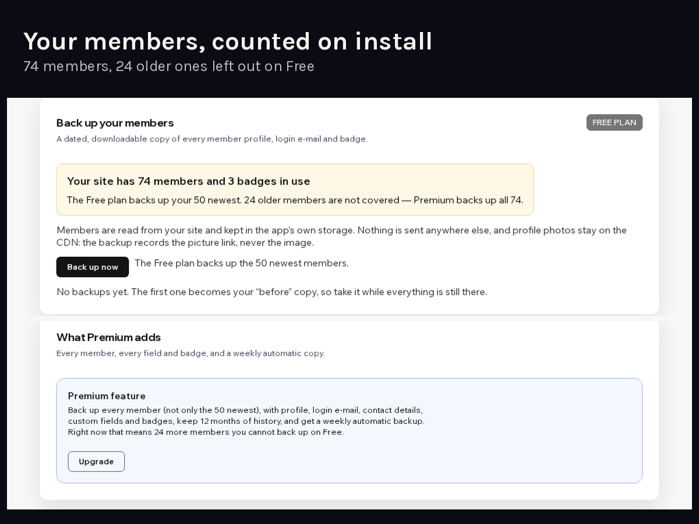

Members Backup: CSV Export
Every member, badge and custom field in a CSV
- Free backs up your 50 newest members
- Login e-mail, status, badges, custom fields
- See what changed since the last backup
- Premium: every member, weekly automatic copy

What it does
Members are the people who signed up, and a member list you cannot recover is a community you rebuild by hand. This app keeps a dated, downloadable copy of every member profile, inside your site's own storage.
Members are read from your site, page by page, and written to a dated backup with the login e-mail and its verification state, first and last name, status and privacy, phone, city and country, join date and last login, the profile link, every badge the member holds, and every custom-field value by its display name. Each backup downloads as a CSV that opens in any spreadsheet.
The page shows your own numbers first: how many members and badges your site has, and how many older members the Free plan leaves out, so the limit is visible before you decide anything. After every copy the app lists what is new, missing or changed against the previous one, so a deleted member is visible.
Free backs up the 50 newest members and keeps the two most recent backups. Premium backs up every member, keeps 12 months of history and takes an automatic copy the first time you open the page after a week. Premium is $6 a month, or $5 a month billed yearly, with a 14-day free trial.
Price
Free
Premium
$6/month, or $5/month billed yearly ($60/year), 14-day free trial
- Every member, with no limit
- 12 months of backup history
- A weekly automatic copy